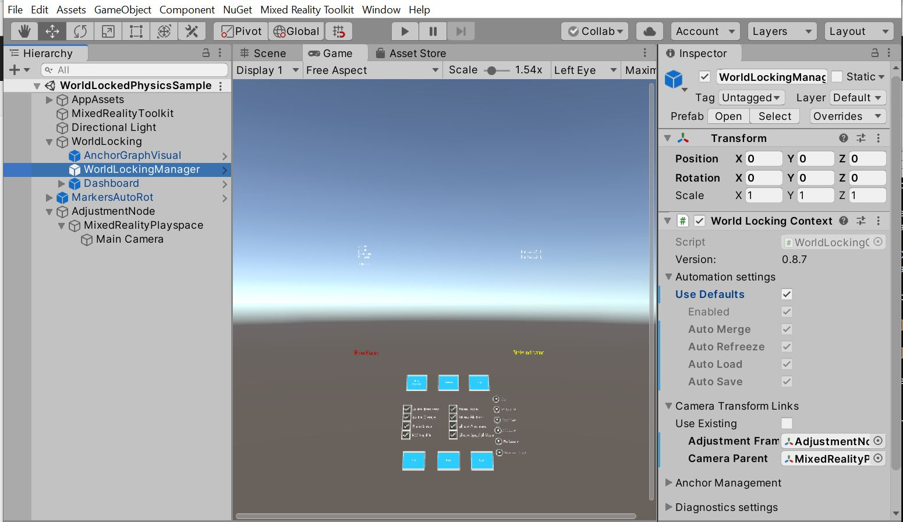

Before getting started
The World Locking Tools for Unity offers a very powerful API for fine control over the services it offers. On first look it can be quite overwhelming.
A reasonable question might be: How much code should I expect to write to use WLT?
The answer, which may surprise you, is "None."
WLT has been carefully structured to handle the vast majority of usage cases with a simple drag and drop interface. Some slight modifications to your scene, as described here, and your application is world-locked and anchor free.

Customizing behavior through code
There are two cases where you might want to do additional coding against the WLT APIs.
First, you might want to customize your customers' experiences, especially in extraordinary circumstances, such as loss of tracking. Some such bespoke behavior is described in the Handling exceptional conditions section.
The other case is where additional input is required from your application in order to perform a service for you. For example, in order to align your coordinate system with physical world features in a desired way, you must give an indication of how you want the coordinate system aligned. This additional input comes in the form of pairs of virtual and tracking space poses.
Start off easy
WLT strives to maintain this pattern throughout. To get the most commonly desired functionality requires no coding and minimal setup. Default behavior is implemented as available components. Customizing the default behavior requires only enough code to override the provided behavior with the behavior you want. Additional features require only enough interaction with your application to indicate your intentions.
There is a lot of API surface in WLT. Those are growth opportunities for farther down the road, so that WLT never boxes you in. But start off simple. You may find WLT does everything you require from it without a line of code.